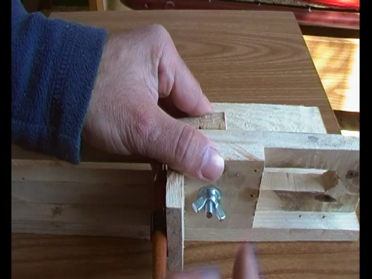
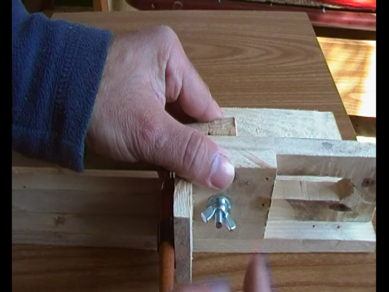

Oggi vedremo come costruire un macchinario per tagliar le bottiglie
Abbiamo bisogno di una bas ein legno, poco più grande delle bottiglie che vogliamo tagliare.
Io ho usato una base di 13X40 cm.
Un seocndo pezzo di legno che fungerà da base, nel mio caso è 40x40 cm.

Un terzo pezzo di legno che servirà a far scorrere il tagliavetro o diamante.
Iniziamo con incollare il primo legno con il secondo, in modo da formare una L, come infigura.
Ora prendiamo il pezzo di legno, dove dovrà scorrere il diamante e disegnamo una linea a 1,5 cm dal borodo

Prendiamo il tagliavetri e segnamo lo spesso, tirando una seconda linea.

Pratichiamo due dori alle stremità delle due righe appena disegnate.

Con un seghetto alternativo tagliamo il legno seguendo le linee principali in modo da creare un binario.
In questo binario deve passare il tagliavetri.
Incolliamo il binario sulla staffa a L, lasciando come bordo almeno 1,5 cm, come in foto.

Ora creiamo un altra staffa a L, un po più piccola della prima, formata da un pezzo da 5,5x5,5 cm, e l'altro da 5,5x4,5 cm.

Appoggiamo la staffa a L, appena creata, sul binario e segnamo con una matita il percorso del binario.
Con una piccola staffa e due viti fissiamo il tagliavetri.
Nell'altra parte della staffa a L pratichiamo un piccolo foro.
Questo foro, con dado e vite ed un piccolo fermo, ciu servirà per spostare e fissare il tagliavetro.
 

Per tagliare il vetro la procedura è la seguente:
1) Posizioniamo il tagliavetro all'altezza in cui vogliamo effettuare il taglio.
2) Ruotiamo la bottiglia creando un solco in tutto il perimetro.
3) Se dobbiamo effettuare un secondo taglia, spostiamo il tagliavetro e ripetiamo l'operazione del punto due.

Per dividere il vetro, dopo il taglio, io ho usato la fiamma di una candela.

ATTENZIONE:
Tagliata la bottiglia il vetro è molto affilato, quindi smussate i bordi con un po di carta vetrata.
Il tagliavetro è terminato.